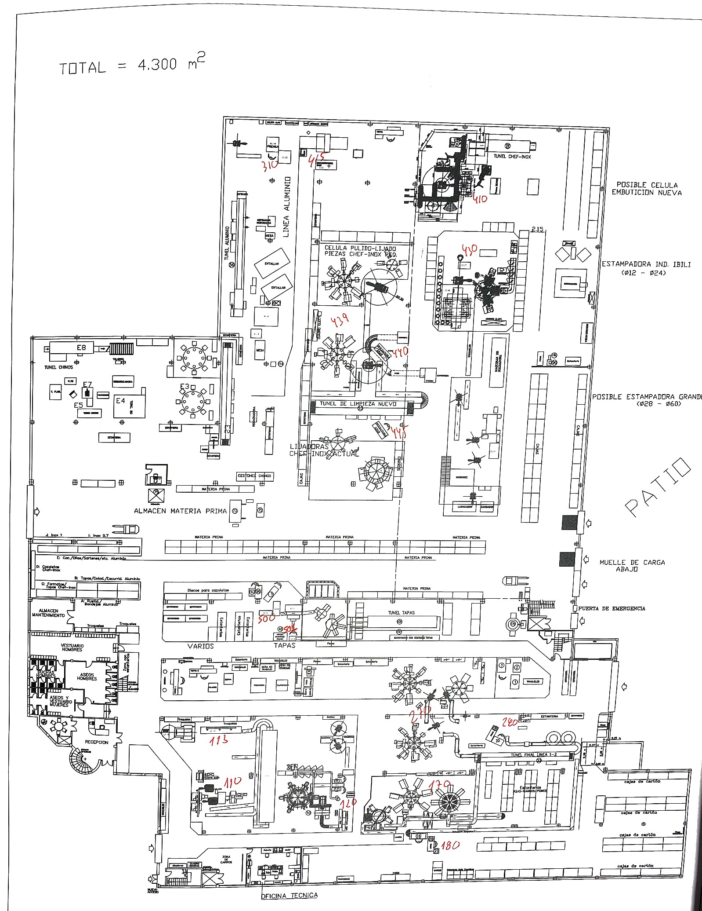
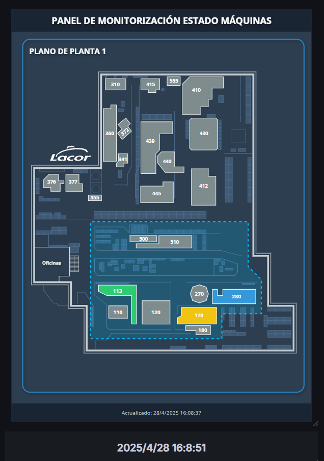
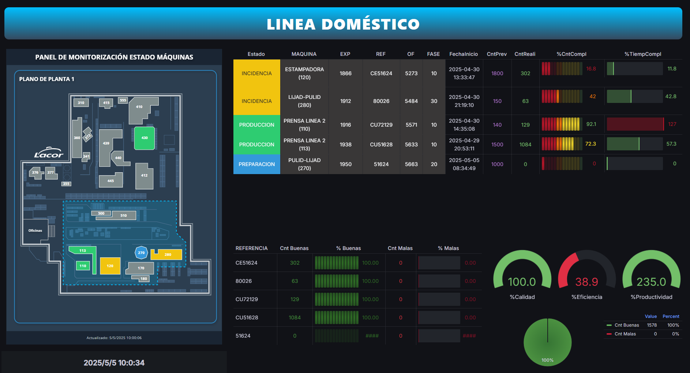
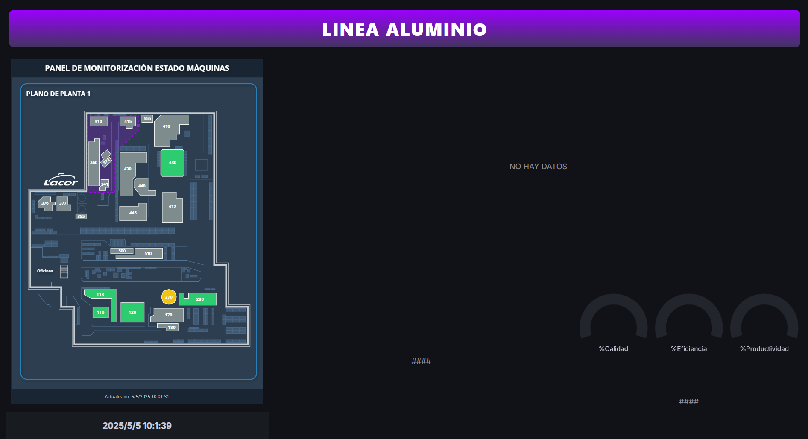
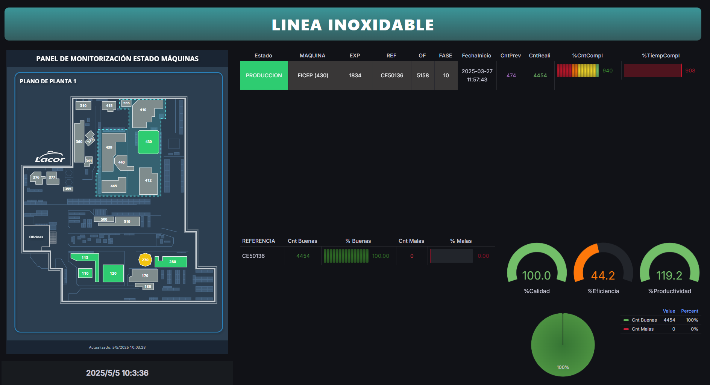
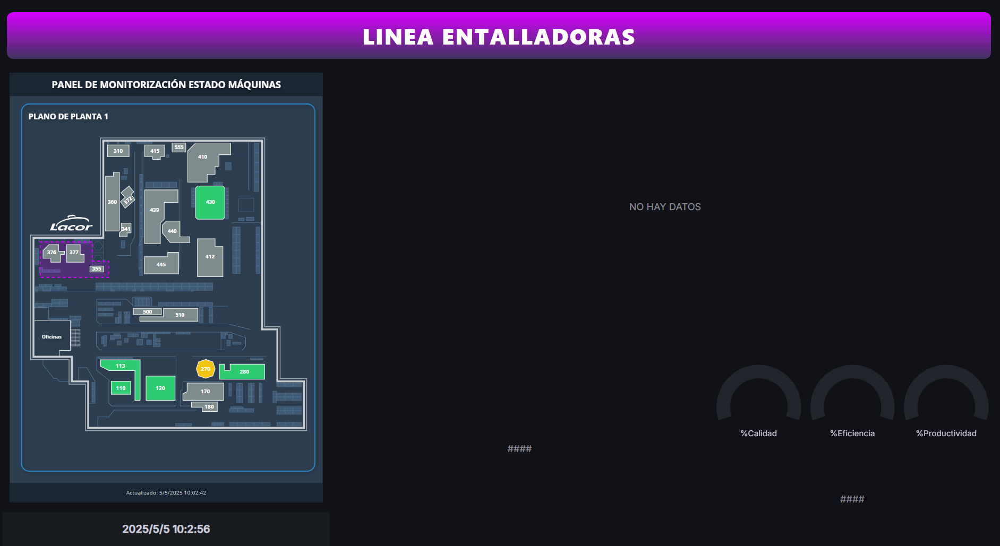

Visualización en Grafana
Uso de Grafana
Como mencioné anteriormente, al principio la visualización en Grafana era bastante limitada para el proyecto inicial. Sin embargo, logramos adaptar la herramienta para crear un sistema de paneles de visualización enfocado en el monitoreo en tiempo real de las líneas de producción.
Ademas, Grafana está alojado en el servidor configurado para este proyecto, el mismo en el que se almacenan los datos de producción, lo que facilita un acceso rápido, seguro y centralizado tanto a los paneles de visualización como a la base de datos MySQL.

Conexión a Base de Datos
Al igual que en Power BI, nos conectamos directamente a la base de datos MySQL. En este caso, Grafana obtiene y envía los datos mediante consultas SELECT. Sin embargo, a diferencia de Power BI, las transformaciones de los datos son más complicadas en Grafana, lo que añade una capa de complejidad a la hora de trabajar con los datos.
Visualización
Para este proyecto, creamos un panel/dashboard para cada línea de fabricación, mostrando los datos relevantes de manera clara y concisa. La visualización incluye los siguientes elementos:
Tabla Iniciadas:
Esta tabla muestra el estado de la máquina, con un código de colores para facilitar la interpretación:
Amarillo: Incidencia
Verde: Producción
Azul: Preparación
Además, se incluyen los siguientes datos:
- Expediente
- Referencia
- Orden de Fabricación (OF)
- Fase
- Máquina
- Fecha de inicio de la producción
- Cantidad prevista
- Cantidad realizada
- Un **% de cantidad completada** con una barra de progreso
- Un **% de tiempo completado**, representado con una barra de carga similarTabla por REFERENCIA: Piezas Buenas y Malas:
Otra tabla que muestra las piezas buenas y malas, agrupadas por referencia.
Total:
Un gráfico tipo “pie chart” que muestra el total de piezas buenas frente a las piezas malas, facilitando la visualización de la proporción entre ambos.
Plano del Taller Interactivo:
Con el objetivo de mejorar aún más la visualización y localización de los estados de las máquinas dentro del entorno productivo, se creó un plano interactivo del taller utilizando el plugin HTML Graphics de Grafana.
Este plano incluye:
Ubicación de las máquinas sobre el mapa del taller, mostrando de manera precisa su disposición real.
Cambio de color dinámico de cada máquina en el plano, en función de su estado operativo como en la Tabla Iniciadas
Delimitación de líneas de producción: Cada grupo de máquinas pertenecientes a una línea de producción específica está rodeado por líneas en movimiento que indican visualmente el área que ocupa cada línea dentro del taller.
Actualización en tiempo real: Los estados de las máquinas y las líneas en el plano se actualizan automáticamente gracias a la sincronización constante con la base de datos.
Esta integración no solo proporciona un acceso visual inmediato a la situación de cada máquina, sino que también facilita la gestión y supervisión rápida del entorno productivo, permitiendo actuar de manera inmediata ante cualquier incidencia.
 
Implementacion
Este sistema de visualización mediante Grafana ha sido diseñado para ser mostrado en pantallas informativas distribuidas en la fábrica, lo que proporciona al personal de producción una información clara, accesible y actualizada en tiempo real.
Mediante la función playlist de Grafana, los diferentes paneles de cada línea de producción se rotan automáticamente cada pocos segundos, permitiendo que toda la información relevante esté disponible de manera cíclica sin necesidad de intervención manual.
Actualmente se monitorizan las siguientes líneas:
| ALUMINIO | DOMÉSTICO | ENTALLADORAS | INOXIDABLE |
A medida que nuevas máquinas se integren en el proceso productivo, sus datos se incorporarán automáticamente a este sistema de visualización, ampliando progresivamente el alcance del monitoreo en planta.



